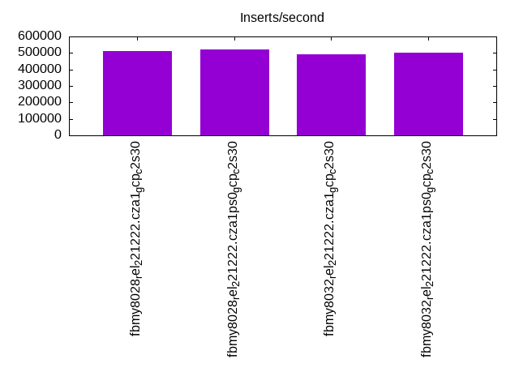
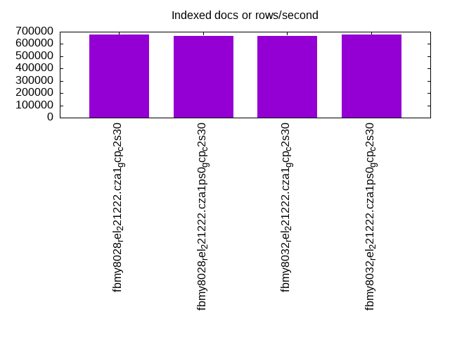
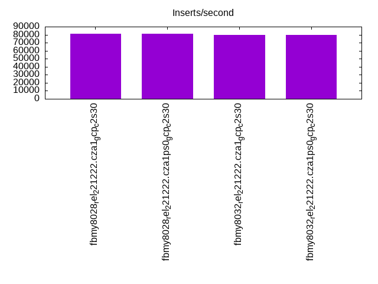
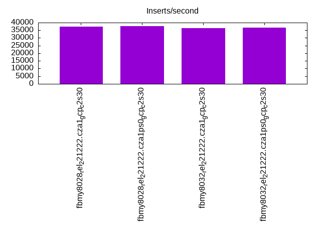
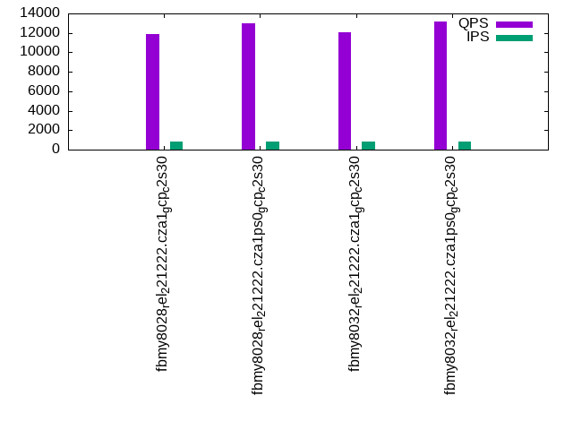
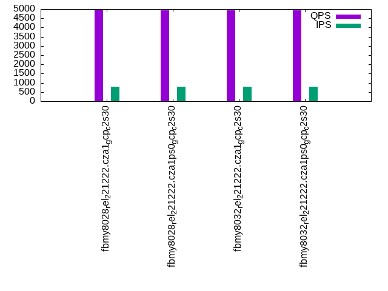
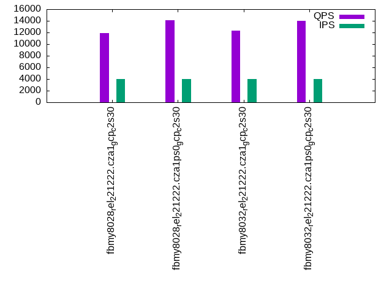
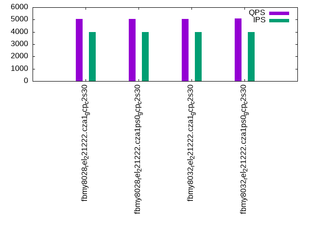
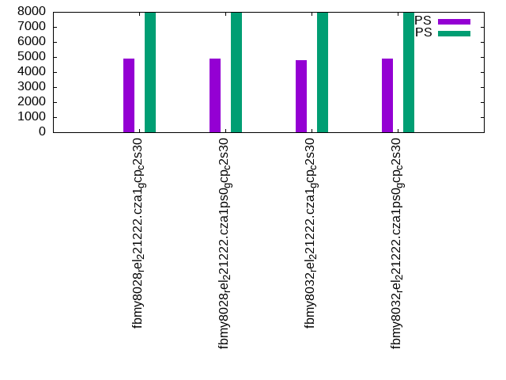

Introduction
This is a report for the insert benchmark with 4000M docs and 8 client(s). It is generated by scripts (bash, awk, sed) and Tufte might not be impressed. An overview of the insert benchmark is here and a short update is here. Below, by DBMS, I mean DBMS+version.config. An example is my8020.c10b40 where my means MySQL, 8020 is version 8.0.20 and c10b40 is the name for the configuration file.
The test server is a c2-standard-30 from GCP with 15 cores, hyperthreads disabled, Ubuntu 22.04 and XFS using SW RAID 0 over 4 local SSDs. The benchmark was run with 8 clients and there were 1, 2 or 3 connections per client. It uses 8 tables with a client per table. It loads 20M rows per table without secondary indexes, creates 3 secondary indexes per table, then inserts 50m+50m rows per table with a delete per insert to avoid growing the table. It then does 6 read+write tests for 1200s each that do queries as fast as possible with 100,100,500,500,1000,1000 inserts/s and the same for deletes/s per client concurrent with the queries. The database is cached in memory. Clients and the DBMS share one server. The per-database configs are in the per-database subdirectories here.
The tested DBMS are:
- fbmy8028_rel_221222.cza1_gcp_c2s30 - MyRocks 8.0.28 compiled on Dec 22, 2023 at git hash 2ad105fc, RocksDB 8.7.0 at git hash 29005f0b, cza1_gcp_c2s30 config
- fbmy8028_rel_221222.cza1ps0_gcp_c2s30 - MyRocks 8.0.28 compiled on Dec 22, 2023 at git hash 2ad105fc, RocksDB 8.7.0 at git hash 29005f0b, cza1ps0_gcp_c2s30 config
- fbmy8032_rel_221222.cza1_gcp_c2s30 - MyRocks 8.0.32 compiled on Dec 22, 2023 at git hash 76707b44, RocksDB 8.7.0 at git hash 29005f0b, cza1_gcp_c2s30 config
- fbmy8032_rel_221222.cza1ps0_gcp_c2s30 - MyRocks 8.0.32 compiled on Dec 22, 2023 at git hash 76707b44, RocksDB 8.7.0 at git hash 29005f0b, cza1ps0_gcp_c2s30 config
Contents
- Summary
- l.i0: load without secondary indexes
- l.x: create secondary indexes
- l.i1: continue load after secondary indexes created with 50 inserts per transaction
- l.i2: continue load after secondary indexes created with 5 inserts per transaction
- qr100.L1: range queries with 100 insert/s per client
- qp100.L2: point queries with 100 insert/s per client
- qr500.L3: range queries with 500 insert/s per client
- qp500.L4: point queries with 500 insert/s per client
- qr1000.L5: range queries with 1000 insert/s per client
- qp1000.L6: point queries with 1000 insert/s per client
Summary
The numbers are inserts/s for l.i0, l.i1 and l.i2, indexed docs (or rows) /s for l.x and queries/s for qr100, qp100 thru qr1000, qp1000" The values are the average rate over the entire test for inserts (IPS) and queries (QPS). The range of values for IPS and QPS is split into 3 parts: bottom 25%, middle 50%, top 25%. Values in the bottom 25% have a red background, values in the top 25% have a green background and values in the middle have no color. A gray background is used for values that can be ignored because the DBMS did not sustain the target insert rate. Red backgrounds are not used when the minimum value is within 80% of the max value.
| dbms | l.i0 | l.x | l.i1 | l.i2 | qr100 | qp100 | qr500 | qp500 | qr1000 | qp1000 |
|---|---|---|---|---|---|---|---|---|---|---|
| fbmy8028_rel_221222.cza1_gcp_c2s30 | 511117 | 679117 | 80849 | 37488 | 11858 | 4977 | 11846 | 5037 | 8217 | 4913 |
| fbmy8028_rel_221222.cza1ps0_gcp_c2s30 | 522944 | 664231 | 80951 | 37629 | 12958 | 4932 | 14116 | 5044 | 9584 | 4887 |
| fbmy8032_rel_221222.cza1_gcp_c2s30 | 489476 | 667223 | 79741 | 36513 | 12085 | 4928 | 12362 | 5036 | 8527 | 4802 |
| fbmy8032_rel_221222.cza1ps0_gcp_c2s30 | 500375 | 678081 | 79404 | 36680 | 13213 | 4922 | 14002 | 5084 | 8870 | 4873 |
This table has relative throughput, throughput for the DBMS relative to the DBMS in the first line, using the absolute throughput from the previous table. Values less than 0.95 have a yellow background. Values greater than 1.05 have a blue background.
| dbms | l.i0 | l.x | l.i1 | l.i2 | qr100 | qp100 | qr500 | qp500 | qr1000 | qp1000 |
|---|---|---|---|---|---|---|---|---|---|---|
| fbmy8028_rel_221222.cza1_gcp_c2s30 | 1.00 | 1.00 | 1.00 | 1.00 | 1.00 | 1.00 | 1.00 | 1.00 | 1.00 | 1.00 |
| fbmy8028_rel_221222.cza1ps0_gcp_c2s30 | 1.02 | 0.98 | 1.00 | 1.00 | 1.09 | 0.99 | 1.19 | 1.00 | 1.17 | 0.99 |
| fbmy8032_rel_221222.cza1_gcp_c2s30 | 0.96 | 0.98 | 0.99 | 0.97 | 1.02 | 0.99 | 1.04 | 1.00 | 1.04 | 0.98 |
| fbmy8032_rel_221222.cza1ps0_gcp_c2s30 | 0.98 | 1.00 | 0.98 | 0.98 | 1.11 | 0.99 | 1.18 | 1.01 | 1.08 | 0.99 |
This lists the average rate of inserts/s for the tests that do inserts concurrent with queries. For such tests the query rate is listed in the table above. The read+write tests are setup so that the insert rate should match the target rate every second. Cells that are not at least 95% of the target have a red background to indicate a failure to satisfy the target.
| dbms | qr100.L1 | qp100.L2 | qr500.L3 | qp500.L4 | qr1000.L5 | qp1000.L6 |
|---|---|---|---|---|---|---|
| fbmy8028_rel_221222.cza1_gcp_c2s30 | 796 | 796 | 3980 | 3978 | 7960 | 7960 |
| fbmy8028_rel_221222.cza1ps0_gcp_c2s30 | 796 | 796 | 3980 | 3978 | 7960 | 7960 |
| fbmy8032_rel_221222.cza1_gcp_c2s30 | 796 | 796 | 3978 | 3978 | 7965 | 7960 |
| fbmy8032_rel_221222.cza1ps0_gcp_c2s30 | 796 | 796 | 3978 | 3978 | 7960 | 7960 |
| target | 800 | 800 | 4000 | 4000 | 8000 | 8000 |
l.i0
l.i0: load without secondary indexes. Graphs for performance per 1-second interval are here.
Average throughput:
Insert response time histogram: each cell has the percentage of responses that take <= the time in the header and max is the max response time in seconds. For the max column values in the top 25% of the range have a red background and in the bottom 25% of the range have a green background. The red background is not used when the min value is within 80% of the max value.
| dbms | 256us | 1ms | 4ms | 16ms | 64ms | 256ms | 1s | 4s | 16s | gt | max |
|---|---|---|---|---|---|---|---|---|---|---|---|
| fbmy8028_rel_221222.cza1_gcp_c2s30 | 5.822 | 94.025 | 0.125 | 0.010 | 0.016 | 0.004 | 0.412 | ||||
| fbmy8028_rel_221222.cza1ps0_gcp_c2s30 | 8.258 | 91.584 | 0.129 | 0.010 | 0.016 | 0.003 | 0.452 | ||||
| fbmy8032_rel_221222.cza1_gcp_c2s30 | 3.012 | 96.840 | 0.117 | 0.010 | 0.017 | 0.003 | 0.410 | ||||
| fbmy8032_rel_221222.cza1ps0_gcp_c2s30 | 4.899 | 94.946 | 0.127 | 0.009 | 0.016 | 0.003 | 0.424 |
Performance metrics for the DBMS listed above. Some are normalized by throughput, others are not. Legend for results is here.
ips qps rps rmbps wps wmbps rpq rkbpq wpi wkbpi csps cpups cspq cpupq dbgb1 dbgb2 rss maxop p50 p99 tag 511117 0 0 0.0 517.7 120.4 0.000 0.000 0.001 0.241 65582 72.5 0.128 21 114.6 114.8 26.5 0.412 65253 42653 fbmy8028_rel_221222.cza1_gcp_c2s30 522944 0 0 0.0 533.1 119.9 0.000 0.000 0.001 0.235 67513 72.7 0.129 21 114.5 114.7 26.4 0.452 66127 42953 fbmy8028_rel_221222.cza1ps0_gcp_c2s30 489476 0 0 0.0 500.1 112.8 0.000 0.000 0.001 0.236 62475 71.3 0.128 22 114.2 114.5 26.5 0.410 62432 41655 fbmy8032_rel_221222.cza1_gcp_c2s30 500375 0 0 0.0 508.1 115.5 0.000 0.000 0.001 0.236 64254 72.1 0.128 22 114.7 115.0 26.3 0.424 63230 42553 fbmy8032_rel_221222.cza1ps0_gcp_c2s30
l.x
l.x: create secondary indexes.
Average throughput:
Performance metrics for the DBMS listed above. Some are normalized by throughput, others are not. Legend for results is here.
ips qps rps rmbps wps wmbps rpq rkbpq wpi wkbpi csps cpups cspq cpupq dbgb1 dbgb2 rss maxop p50 p99 tag 679117 0 836 146.4 273.6 80.7 0.001 0.221 0.000 0.122 2330 50.0 0.003 11 255.8 256.1 93.9 0.002 NA NA fbmy8028_rel_221222.cza1_gcp_c2s30 664231 0 738 131.3 266.7 77.5 0.001 0.202 0.000 0.119 2271 49.8 0.003 11 255.7 255.9 93.6 0.002 NA NA fbmy8028_rel_221222.cza1ps0_gcp_c2s30 667223 0 788 140.0 266.0 77.6 0.001 0.215 0.000 0.119 2534 49.8 0.004 11 255.4 255.6 94.0 0.004 NA NA fbmy8032_rel_221222.cza1_gcp_c2s30 678081 0 780 137.8 273.9 80.5 0.001 0.208 0.000 0.122 2695 49.9 0.004 11 255.9 256.2 93.7 0.002 NA NA fbmy8032_rel_221222.cza1ps0_gcp_c2s30
l.i1
l.i1: continue load after secondary indexes created with 50 inserts per transaction. Graphs for performance per 1-second interval are here.
Average throughput:
Insert response time histogram: each cell has the percentage of responses that take <= the time in the header and max is the max response time in seconds. For the max column values in the top 25% of the range have a red background and in the bottom 25% of the range have a green background. The red background is not used when the min value is within 80% of the max value.
| dbms | 256us | 1ms | 4ms | 16ms | 64ms | 256ms | 1s | 4s | 16s | gt | max |
|---|---|---|---|---|---|---|---|---|---|---|---|
| fbmy8028_rel_221222.cza1_gcp_c2s30 | 0.002 | 29.946 | 69.874 | 0.160 | 0.013 | 0.004 | 0.886 | ||||
| fbmy8028_rel_221222.cza1ps0_gcp_c2s30 | 0.013 | 29.459 | 70.369 | 0.143 | 0.012 | 0.005 | 0.817 | ||||
| fbmy8032_rel_221222.cza1_gcp_c2s30 | 0.006 | 27.869 | 71.934 | 0.176 | 0.012 | 0.003 | 0.658 | ||||
| fbmy8032_rel_221222.cza1ps0_gcp_c2s30 | 0.006 | 27.224 | 72.611 | 0.143 | 0.013 | 0.003 | nonzero | 1.844 |
Delete response time histogram: each cell has the percentage of responses that take <= the time in the header and max is the max response time in seconds. For the max column values in the top 25% of the range have a red background and in the bottom 25% of the range have a green background. The red background is not used when the min value is within 80% of the max value.
| dbms | 256us | 1ms | 4ms | 16ms | 64ms | 256ms | 1s | 4s | 16s | gt | max |
|---|---|---|---|---|---|---|---|---|---|---|---|
| fbmy8028_rel_221222.cza1_gcp_c2s30 | 0.006 | 26.822 | 72.859 | 0.284 | 0.024 | 0.004 | 0.889 | ||||
| fbmy8028_rel_221222.cza1ps0_gcp_c2s30 | 0.018 | 26.970 | 72.720 | 0.267 | 0.020 | 0.005 | 0.821 | ||||
| fbmy8032_rel_221222.cza1_gcp_c2s30 | 0.009 | 25.412 | 74.262 | 0.293 | 0.021 | 0.004 | 0.652 | ||||
| fbmy8032_rel_221222.cza1ps0_gcp_c2s30 | 0.010 | 24.737 | 74.972 | 0.257 | 0.021 | 0.003 | nonzero | 1.846 |
Performance metrics for the DBMS listed above. Some are normalized by throughput, others are not. Legend for results is here.
ips qps rps rmbps wps wmbps rpq rkbpq wpi wkbpi csps cpups cspq cpupq dbgb1 dbgb2 rss maxop p50 p99 tag 80849 0 493 13.9 715.7 148.4 0.006 0.176 0.009 1.880 49832 71.5 0.616 133 282.1 283.0 92.7 0.886 10139 6842 fbmy8028_rel_221222.cza1_gcp_c2s30 80951 0 495 13.4 708.0 152.7 0.006 0.169 0.009 1.932 50642 70.9 0.626 131 279.9 280.9 92.4 0.817 10239 6792 fbmy8028_rel_221222.cza1ps0_gcp_c2s30 79741 0 460 13.0 713.8 145.8 0.006 0.167 0.009 1.872 49273 71.4 0.618 134 279.5 280.4 92.8 0.658 10039 6942 fbmy8032_rel_221222.cza1_gcp_c2s30 79404 0 461 13.5 706.3 147.1 0.006 0.174 0.009 1.896 48866 71.5 0.615 135 279.7 280.7 92.5 1.844 10039 6595 fbmy8032_rel_221222.cza1ps0_gcp_c2s30
l.i2
l.i2: continue load after secondary indexes created with 5 inserts per transaction. Graphs for performance per 1-second interval are here.
Average throughput:
Insert response time histogram: each cell has the percentage of responses that take <= the time in the header and max is the max response time in seconds. For the max column values in the top 25% of the range have a red background and in the bottom 25% of the range have a green background. The red background is not used when the min value is within 80% of the max value.
| dbms | 256us | 1ms | 4ms | 16ms | 64ms | 256ms | 1s | 4s | 16s | gt | max |
|---|---|---|---|---|---|---|---|---|---|---|---|
| fbmy8028_rel_221222.cza1_gcp_c2s30 | 0.003 | 70.093 | 29.738 | 0.156 | 0.008 | 0.001 | nonzero | 0.423 | |||
| fbmy8028_rel_221222.cza1ps0_gcp_c2s30 | 0.011 | 70.426 | 29.402 | 0.152 | 0.007 | 0.001 | nonzero | 0.265 | |||
| fbmy8032_rel_221222.cza1_gcp_c2s30 | 0.001 | 65.576 | 34.259 | 0.157 | 0.007 | 0.001 | 0.242 | ||||
| fbmy8032_rel_221222.cza1ps0_gcp_c2s30 | 0.004 | 66.552 | 33.274 | 0.162 | 0.007 | 0.001 | 0.228 |
Delete response time histogram: each cell has the percentage of responses that take <= the time in the header and max is the max response time in seconds. For the max column values in the top 25% of the range have a red background and in the bottom 25% of the range have a green background. The red background is not used when the min value is within 80% of the max value.
| dbms | 256us | 1ms | 4ms | 16ms | 64ms | 256ms | 1s | 4s | 16s | gt | max |
|---|---|---|---|---|---|---|---|---|---|---|---|
| fbmy8028_rel_221222.cza1_gcp_c2s30 | 58.124 | 41.687 | 0.176 | 0.012 | 0.002 | nonzero | 0.423 | ||||
| fbmy8028_rel_221222.cza1ps0_gcp_c2s30 | 58.736 | 41.078 | 0.173 | 0.011 | 0.002 | nonzero | 0.267 | ||||
| fbmy8032_rel_221222.cza1_gcp_c2s30 | 52.966 | 46.848 | 0.175 | 0.011 | 0.001 | nonzero | 0.266 | ||||
| fbmy8032_rel_221222.cza1ps0_gcp_c2s30 | 54.272 | 45.535 | 0.180 | 0.011 | 0.001 | 0.227 |
Performance metrics for the DBMS listed above. Some are normalized by throughput, others are not. Legend for results is here.
ips qps rps rmbps wps wmbps rpq rkbpq wpi wkbpi csps cpups cspq cpupq dbgb1 dbgb2 rss maxop p50 p99 tag 37488 0 203 6.2 411.4 77.7 0.005 0.171 0.011 2.123 198775 70.6 5.302 282 280.0 280.3 81.6 0.423 4911 2842 fbmy8028_rel_221222.cza1_gcp_c2s30 37629 0 195 6.2 413.0 80.5 0.005 0.168 0.011 2.191 202558 70.1 5.383 279 280.5 280.8 81.1 0.265 4935 2847 fbmy8028_rel_221222.cza1ps0_gcp_c2s30 36513 0 202 5.8 401.0 79.0 0.006 0.163 0.011 2.214 194760 70.7 5.334 290 279.8 280.1 81.6 0.242 4840 2753 fbmy8032_rel_221222.cza1_gcp_c2s30 36680 0 200 6.2 407.0 78.3 0.005 0.172 0.011 2.186 197381 70.3 5.381 287 280.2 280.5 81.6 0.228 4795 2832 fbmy8032_rel_221222.cza1ps0_gcp_c2s30
qr100.L1
qr100.L1: range queries with 100 insert/s per client. Graphs for performance per 1-second interval are here.
Average throughput:
Query response time histogram: each cell has the percentage of responses that take <= the time in the header and max is the max response time in seconds. For max values in the top 25% of the range have a red background and in the bottom 25% of the range have a green background. The red background is not used when the min value is within 80% of the max value.
| dbms | 256us | 1ms | 4ms | 16ms | 64ms | 256ms | 1s | 4s | 16s | gt | max |
|---|---|---|---|---|---|---|---|---|---|---|---|
| fbmy8028_rel_221222.cza1_gcp_c2s30 | 66.164 | 12.446 | 19.886 | 1.498 | 0.007 | nonzero | 0.097 | ||||
| fbmy8028_rel_221222.cza1ps0_gcp_c2s30 | 68.341 | 14.287 | 15.463 | 1.846 | 0.063 | nonzero | 0.116 | ||||
| fbmy8032_rel_221222.cza1_gcp_c2s30 | 66.627 | 16.092 | 15.489 | 1.778 | 0.014 | nonzero | 0.117 | ||||
| fbmy8032_rel_221222.cza1ps0_gcp_c2s30 | 68.003 | 15.018 | 15.200 | 1.771 | 0.008 | nonzero | 0.116 |
Insert response time histogram: each cell has the percentage of responses that take <= the time in the header and max is the max response time in seconds. For max values in the top 25% of the range have a red background and in the bottom 25% of the range have a green background. The red background is not used when the min value is within 80% of the max value.
| dbms | 256us | 1ms | 4ms | 16ms | 64ms | 256ms | 1s | 4s | 16s | gt | max |
|---|---|---|---|---|---|---|---|---|---|---|---|
| fbmy8028_rel_221222.cza1_gcp_c2s30 | 0.608 | 99.365 | 0.028 | 0.013 | |||||||
| fbmy8028_rel_221222.cza1ps0_gcp_c2s30 | 1.042 | 98.802 | 0.156 | 0.013 | |||||||
| fbmy8032_rel_221222.cza1_gcp_c2s30 | 0.469 | 99.372 | 0.146 | 0.014 | 0.020 | ||||||
| fbmy8032_rel_221222.cza1ps0_gcp_c2s30 | 0.514 | 99.455 | 0.031 | 0.005 |
Delete response time histogram: each cell has the percentage of responses that take <= the time in the header and max is the max response time in seconds. For max values in the top 25% of the range have a red background and in the bottom 25% of the range have a green background. The red background is not used when the min value is within 80% of the max value.
| dbms | 256us | 1ms | 4ms | 16ms | 64ms | 256ms | 1s | 4s | 16s | gt | max |
|---|---|---|---|---|---|---|---|---|---|---|---|
| fbmy8028_rel_221222.cza1_gcp_c2s30 | 3.493 | 96.455 | 0.052 | 0.010 | |||||||
| fbmy8028_rel_221222.cza1ps0_gcp_c2s30 | 3.965 | 95.896 | 0.139 | 0.015 | |||||||
| fbmy8032_rel_221222.cza1_gcp_c2s30 | 1.132 | 98.674 | 0.181 | 0.014 | 0.019 | ||||||
| fbmy8032_rel_221222.cza1ps0_gcp_c2s30 | 2.299 | 97.653 | 0.045 | 0.003 | 0.025 |
Performance metrics for the DBMS listed above. Some are normalized by throughput, others are not. Legend for results is here.
ips qps rps rmbps wps wmbps rpq rkbpq wpi wkbpi csps cpups cspq cpupq dbgb1 dbgb2 rss maxop p50 p99 tag 796 11858 100 4.5 46.5 9.3 0.008 0.393 0.058 11.999 47348 55.7 3.993 705 271.4 271.9 81.0 0.097 991 463 fbmy8028_rel_221222.cza1_gcp_c2s30 796 12958 98 4.5 56.0 13.1 0.008 0.355 0.070 16.857 51982 56.1 4.012 649 271.5 272.0 81.3 0.116 1119 448 fbmy8028_rel_221222.cza1ps0_gcp_c2s30 796 12085 91 4.3 52.5 10.8 0.008 0.367 0.066 13.841 48241 56.0 3.992 695 272.2 272.7 81.7 0.117 1486 384 fbmy8032_rel_221222.cza1_gcp_c2s30 796 13213 90 4.3 52.6 11.5 0.007 0.336 0.066 14.863 52892 55.6 4.003 631 271.4 271.9 81.2 0.116 1470 591 fbmy8032_rel_221222.cza1ps0_gcp_c2s30
qp100.L2
qp100.L2: point queries with 100 insert/s per client. Graphs for performance per 1-second interval are here.
Average throughput:
Query response time histogram: each cell has the percentage of responses that take <= the time in the header and max is the max response time in seconds. For max values in the top 25% of the range have a red background and in the bottom 25% of the range have a green background. The red background is not used when the min value is within 80% of the max value.
| dbms | 256us | 1ms | 4ms | 16ms | 64ms | 256ms | 1s | 4s | 16s | gt | max |
|---|---|---|---|---|---|---|---|---|---|---|---|
| fbmy8028_rel_221222.cza1_gcp_c2s30 | 5.141 | 94.751 | 0.099 | 0.009 | 0.045 | ||||||
| fbmy8028_rel_221222.cza1ps0_gcp_c2s30 | 4.827 | 95.070 | 0.095 | 0.009 | nonzero | 0.077 | |||||
| fbmy8032_rel_221222.cza1_gcp_c2s30 | 4.760 | 95.134 | 0.096 | 0.010 | 0.054 | ||||||
| fbmy8032_rel_221222.cza1ps0_gcp_c2s30 | 4.717 | 95.179 | 0.095 | 0.009 | 0.051 |
Insert response time histogram: each cell has the percentage of responses that take <= the time in the header and max is the max response time in seconds. For max values in the top 25% of the range have a red background and in the bottom 25% of the range have a green background. The red background is not used when the min value is within 80% of the max value.
| dbms | 256us | 1ms | 4ms | 16ms | 64ms | 256ms | 1s | 4s | 16s | gt | max |
|---|---|---|---|---|---|---|---|---|---|---|---|
| fbmy8028_rel_221222.cza1_gcp_c2s30 | 0.260 | 74.476 | 25.264 | 0.013 | |||||||
| fbmy8028_rel_221222.cza1ps0_gcp_c2s30 | 0.174 | 67.865 | 31.951 | 0.010 | 0.027 | ||||||
| fbmy8032_rel_221222.cza1_gcp_c2s30 | 0.021 | 84.767 | 15.212 | 0.009 | |||||||
| fbmy8032_rel_221222.cza1ps0_gcp_c2s30 | 0.139 | 86.181 | 13.670 | 0.010 | 0.046 |
Delete response time histogram: each cell has the percentage of responses that take <= the time in the header and max is the max response time in seconds. For max values in the top 25% of the range have a red background and in the bottom 25% of the range have a green background. The red background is not used when the min value is within 80% of the max value.
| dbms | 256us | 1ms | 4ms | 16ms | 64ms | 256ms | 1s | 4s | 16s | gt | max |
|---|---|---|---|---|---|---|---|---|---|---|---|
| fbmy8028_rel_221222.cza1_gcp_c2s30 | 0.670 | 74.490 | 24.837 | 0.003 | 0.028 | ||||||
| fbmy8028_rel_221222.cza1ps0_gcp_c2s30 | 0.545 | 67.625 | 31.809 | 0.021 | 0.023 | ||||||
| fbmy8032_rel_221222.cza1_gcp_c2s30 | 0.226 | 84.667 | 15.108 | 0.010 | |||||||
| fbmy8032_rel_221222.cza1ps0_gcp_c2s30 | 0.694 | 85.590 | 13.688 | 0.028 | 0.047 |
Performance metrics for the DBMS listed above. Some are normalized by throughput, others are not. Legend for results is here.
ips qps rps rmbps wps wmbps rpq rkbpq wpi wkbpi csps cpups cspq cpupq dbgb1 dbgb2 rss maxop p50 p99 tag 796 4977 32363 240.1 33.4 5.5 6.503 49.402 0.042 7.135 82760 19.2 16.628 579 271.6 272.5 94.5 0.045 655 432 fbmy8028_rel_221222.cza1_gcp_c2s30 796 4932 32225 241.5 35.2 5.8 6.534 50.145 0.044 7.494 82462 18.9 16.720 575 271.7 272.5 94.8 0.077 655 432 fbmy8028_rel_221222.cza1ps0_gcp_c2s30 796 4928 32013 236.4 29.6 4.8 6.496 49.111 0.037 6.149 82045 19.3 16.648 587 272.4 273.3 93.8 0.054 655 432 fbmy8032_rel_221222.cza1_gcp_c2s30 796 4922 32179 241.7 34.8 6.0 6.538 50.284 0.044 7.683 82492 19.2 16.762 585 271.6 272.4 96.4 0.051 639 432 fbmy8032_rel_221222.cza1ps0_gcp_c2s30
qr500.L3
qr500.L3: range queries with 500 insert/s per client. Graphs for performance per 1-second interval are here.
Average throughput:
Query response time histogram: each cell has the percentage of responses that take <= the time in the header and max is the max response time in seconds. For max values in the top 25% of the range have a red background and in the bottom 25% of the range have a green background. The red background is not used when the min value is within 80% of the max value.
| dbms | 256us | 1ms | 4ms | 16ms | 64ms | 256ms | 1s | 4s | 16s | gt | max |
|---|---|---|---|---|---|---|---|---|---|---|---|
| fbmy8028_rel_221222.cza1_gcp_c2s30 | 58.716 | 12.971 | 28.291 | 0.021 | nonzero | nonzero | 0.124 | ||||
| fbmy8028_rel_221222.cza1ps0_gcp_c2s30 | 60.691 | 22.274 | 16.937 | 0.098 | nonzero | nonzero | 0.124 | ||||
| fbmy8032_rel_221222.cza1_gcp_c2s30 | 62.603 | 12.795 | 24.579 | 0.023 | nonzero | nonzero | 0.124 | ||||
| fbmy8032_rel_221222.cza1ps0_gcp_c2s30 | 63.918 | 15.341 | 20.620 | 0.121 | nonzero | nonzero | 0.127 |
Insert response time histogram: each cell has the percentage of responses that take <= the time in the header and max is the max response time in seconds. For max values in the top 25% of the range have a red background and in the bottom 25% of the range have a green background. The red background is not used when the min value is within 80% of the max value.
| dbms | 256us | 1ms | 4ms | 16ms | 64ms | 256ms | 1s | 4s | 16s | gt | max |
|---|---|---|---|---|---|---|---|---|---|---|---|
| fbmy8028_rel_221222.cza1_gcp_c2s30 | 0.792 | 89.138 | 10.047 | 0.024 | 0.024 | ||||||
| fbmy8028_rel_221222.cza1ps0_gcp_c2s30 | 1.487 | 81.466 | 17.009 | 0.037 | 0.029 | ||||||
| fbmy8032_rel_221222.cza1_gcp_c2s30 | 0.137 | 83.178 | 16.637 | 0.047 | 0.029 | ||||||
| fbmy8032_rel_221222.cza1ps0_gcp_c2s30 | 0.397 | 80.351 | 19.231 | 0.022 | 0.027 |
Delete response time histogram: each cell has the percentage of responses that take <= the time in the header and max is the max response time in seconds. For max values in the top 25% of the range have a red background and in the bottom 25% of the range have a green background. The red background is not used when the min value is within 80% of the max value.
| dbms | 256us | 1ms | 4ms | 16ms | 64ms | 256ms | 1s | 4s | 16s | gt | max |
|---|---|---|---|---|---|---|---|---|---|---|---|
| fbmy8028_rel_221222.cza1_gcp_c2s30 | 2.858 | 87.473 | 9.650 | 0.019 | 0.027 | ||||||
| fbmy8028_rel_221222.cza1ps0_gcp_c2s30 | 3.338 | 80.386 | 16.243 | 0.033 | 0.001 | 0.123 | |||||
| fbmy8032_rel_221222.cza1_gcp_c2s30 | 1.273 | 82.823 | 15.872 | 0.033 | 0.021 | ||||||
| fbmy8032_rel_221222.cza1ps0_gcp_c2s30 | 1.887 | 79.561 | 18.535 | 0.017 | 0.035 |
Performance metrics for the DBMS listed above. Some are normalized by throughput, others are not. Legend for results is here.
ips qps rps rmbps wps wmbps rpq rkbpq wpi wkbpi csps cpups cspq cpupq dbgb1 dbgb2 rss maxop p50 p99 tag 3980 11846 76 2.0 141.1 34.1 0.006 0.174 0.035 8.765 50228 59.4 4.240 752 273.4 273.8 86.5 0.124 1311 1103 fbmy8028_rel_221222.cza1_gcp_c2s30 3980 14116 80 2.2 137.9 33.0 0.006 0.159 0.035 8.486 59322 58.9 4.202 626 274.1 274.5 86.6 0.124 1470 1167 fbmy8028_rel_221222.cza1ps0_gcp_c2s30 3978 12362 76 2.3 116.6 26.5 0.006 0.187 0.029 6.818 51772 58.2 4.188 706 273.5 273.9 85.1 0.124 1438 1215 fbmy8032_rel_221222.cza1_gcp_c2s30 3978 14002 68 2.1 136.8 32.9 0.005 0.150 0.034 8.469 58541 59.1 4.181 633 272.7 273.1 84.7 0.127 1439 1199 fbmy8032_rel_221222.cza1ps0_gcp_c2s30
qp500.L4
qp500.L4: point queries with 500 insert/s per client. Graphs for performance per 1-second interval are here.
Average throughput:
Query response time histogram: each cell has the percentage of responses that take <= the time in the header and max is the max response time in seconds. For max values in the top 25% of the range have a red background and in the bottom 25% of the range have a green background. The red background is not used when the min value is within 80% of the max value.
| dbms | 256us | 1ms | 4ms | 16ms | 64ms | 256ms | 1s | 4s | 16s | gt | max |
|---|---|---|---|---|---|---|---|---|---|---|---|
| fbmy8028_rel_221222.cza1_gcp_c2s30 | 4.985 | 94.803 | 0.202 | 0.010 | nonzero | 0.091 | |||||
| fbmy8028_rel_221222.cza1ps0_gcp_c2s30 | 5.143 | 94.661 | 0.186 | 0.011 | nonzero | 0.098 | |||||
| fbmy8032_rel_221222.cza1_gcp_c2s30 | 4.840 | 94.985 | 0.167 | 0.008 | 0.056 | ||||||
| fbmy8032_rel_221222.cza1ps0_gcp_c2s30 | 5.346 | 94.481 | 0.164 | 0.008 | nonzero | 0.089 |
Insert response time histogram: each cell has the percentage of responses that take <= the time in the header and max is the max response time in seconds. For max values in the top 25% of the range have a red background and in the bottom 25% of the range have a green background. The red background is not used when the min value is within 80% of the max value.
| dbms | 256us | 1ms | 4ms | 16ms | 64ms | 256ms | 1s | 4s | 16s | gt | max |
|---|---|---|---|---|---|---|---|---|---|---|---|
| fbmy8028_rel_221222.cza1_gcp_c2s30 | 0.033 | 65.326 | 34.608 | 0.033 | 0.046 | ||||||
| fbmy8028_rel_221222.cza1ps0_gcp_c2s30 | 0.142 | 75.010 | 24.827 | 0.020 | 0.047 | ||||||
| fbmy8032_rel_221222.cza1_gcp_c2s30 | 0.030 | 89.215 | 10.744 | 0.010 | 0.049 | ||||||
| fbmy8032_rel_221222.cza1ps0_gcp_c2s30 | 0.013 | 68.236 | 31.735 | 0.015 | 0.034 |
Delete response time histogram: each cell has the percentage of responses that take <= the time in the header and max is the max response time in seconds. For max values in the top 25% of the range have a red background and in the bottom 25% of the range have a green background. The red background is not used when the min value is within 80% of the max value.
| dbms | 256us | 1ms | 4ms | 16ms | 64ms | 256ms | 1s | 4s | 16s | gt | max |
|---|---|---|---|---|---|---|---|---|---|---|---|
| fbmy8028_rel_221222.cza1_gcp_c2s30 | 0.224 | 65.484 | 34.258 | 0.034 | 0.045 | ||||||
| fbmy8028_rel_221222.cza1ps0_gcp_c2s30 | 0.644 | 75.052 | 24.283 | 0.018 | 0.002 | 0.124 | |||||
| fbmy8032_rel_221222.cza1_gcp_c2s30 | 0.569 | 89.239 | 10.176 | 0.015 | 0.001 | 0.087 | |||||
| fbmy8032_rel_221222.cza1ps0_gcp_c2s30 | 0.128 | 68.892 | 30.958 | 0.022 | 0.056 |
Performance metrics for the DBMS listed above. Some are normalized by throughput, others are not. Legend for results is here.
ips qps rps rmbps wps wmbps rpq rkbpq wpi wkbpi csps cpups cspq cpupq dbgb1 dbgb2 rss maxop p50 p99 tag 3978 5037 30908 228.3 170.0 28.1 6.137 46.423 0.043 7.227 84075 26.6 16.693 792 273.9 275.9 85.2 0.091 639 575 fbmy8028_rel_221222.cza1_gcp_c2s30 3978 5044 30901 227.9 164.9 26.9 6.126 46.265 0.041 6.925 84164 26.0 16.684 773 275.2 277.2 85.2 0.098 639 575 fbmy8028_rel_221222.cza1ps0_gcp_c2s30 3978 5036 30722 224.9 137.0 22.3 6.101 45.733 0.034 5.737 83239 25.7 16.530 766 275.8 277.8 85.7 0.056 639 575 fbmy8032_rel_221222.cza1_gcp_c2s30 3978 5084 30985 226.9 134.1 21.9 6.094 45.698 0.034 5.627 84317 25.6 16.584 755 274.3 276.3 85.4 0.089 640 575 fbmy8032_rel_221222.cza1ps0_gcp_c2s30
qr1000.L5
qr1000.L5: range queries with 1000 insert/s per client. Graphs for performance per 1-second interval are here.
Average throughput:

Query response time histogram: each cell has the percentage of responses that take <= the time in the header and max is the max response time in seconds. For max values in the top 25% of the range have a red background and in the bottom 25% of the range have a green background. The red background is not used when the min value is within 80% of the max value.
| dbms | 256us | 1ms | 4ms | 16ms | 64ms | 256ms | 1s | 4s | 16s | gt | max |
|---|---|---|---|---|---|---|---|---|---|---|---|
| fbmy8028_rel_221222.cza1_gcp_c2s30 | 48.935 | 19.564 | 31.340 | 0.160 | 0.001 | nonzero | 0.130 | ||||
| fbmy8028_rel_221222.cza1ps0_gcp_c2s30 | 52.159 | 18.282 | 29.213 | 0.344 | 0.001 | nonzero | 0.131 | ||||
| fbmy8032_rel_221222.cza1_gcp_c2s30 | 56.043 | 12.762 | 30.951 | 0.242 | 0.001 | nonzero | 0.129 | ||||
| fbmy8032_rel_221222.cza1ps0_gcp_c2s30 | 59.153 | 8.429 | 32.295 | 0.124 | 0.001 | nonzero | 0.128 |
Insert response time histogram: each cell has the percentage of responses that take <= the time in the header and max is the max response time in seconds. For max values in the top 25% of the range have a red background and in the bottom 25% of the range have a green background. The red background is not used when the min value is within 80% of the max value.
| dbms | 256us | 1ms | 4ms | 16ms | 64ms | 256ms | 1s | 4s | 16s | gt | max |
|---|---|---|---|---|---|---|---|---|---|---|---|
| fbmy8028_rel_221222.cza1_gcp_c2s30 | 0.130 | 62.960 | 36.832 | 0.078 | 0.034 | ||||||
| fbmy8028_rel_221222.cza1ps0_gcp_c2s30 | 0.503 | 74.560 | 24.876 | 0.061 | 0.032 | ||||||
| fbmy8032_rel_221222.cza1_gcp_c2s30 | 0.007 | 63.608 | 36.300 | 0.084 | 0.039 | ||||||
| fbmy8032_rel_221222.cza1ps0_gcp_c2s30 | 0.023 | 62.624 | 37.280 | 0.070 | 0.002 | 0.076 |
Delete response time histogram: each cell has the percentage of responses that take <= the time in the header and max is the max response time in seconds. For max values in the top 25% of the range have a red background and in the bottom 25% of the range have a green background. The red background is not used when the min value is within 80% of the max value.
| dbms | 256us | 1ms | 4ms | 16ms | 64ms | 256ms | 1s | 4s | 16s | gt | max |
|---|---|---|---|---|---|---|---|---|---|---|---|
| fbmy8028_rel_221222.cza1_gcp_c2s30 | 0.692 | 63.532 | 35.699 | 0.077 | 0.036 | ||||||
| fbmy8028_rel_221222.cza1ps0_gcp_c2s30 | 1.960 | 74.064 | 23.918 | 0.059 | 0.037 | ||||||
| fbmy8032_rel_221222.cza1_gcp_c2s30 | 0.194 | 64.757 | 34.962 | 0.086 | nonzero | 0.119 | |||||
| fbmy8032_rel_221222.cza1ps0_gcp_c2s30 | 0.348 | 63.283 | 36.296 | 0.070 | 0.002 | 0.089 |
Performance metrics for the DBMS listed above. Some are normalized by throughput, others are not. Legend for results is here.
ips qps rps rmbps wps wmbps rpq rkbpq wpi wkbpi csps cpups cspq cpupq dbgb1 dbgb2 rss maxop p50 p99 tag 7960 8217 87 3.8 164.5 34.7 0.011 0.471 0.021 4.467 37266 61.4 4.535 1121 276.2 277.4 84.6 0.130 1119 879 fbmy8028_rel_221222.cza1_gcp_c2s30 7960 9584 92 3.8 158.9 34.5 0.010 0.403 0.020 4.442 42866 61.4 4.473 961 276.5 277.7 84.8 0.131 1135 927 fbmy8028_rel_221222.cza1ps0_gcp_c2s30 7965 8527 84 3.6 160.8 33.7 0.010 0.431 0.020 4.328 38192 61.5 4.479 1082 276.6 277.8 84.8 0.129 959 783 fbmy8032_rel_221222.cza1_gcp_c2s30 7960 8870 82 3.1 164.2 33.7 0.009 0.361 0.021 4.336 39823 61.3 4.490 1037 275.8 276.9 84.7 0.128 975 799 fbmy8032_rel_221222.cza1ps0_gcp_c2s30
qp1000.L6
qp1000.L6: point queries with 1000 insert/s per client. Graphs for performance per 1-second interval are here.
Average throughput:
Query response time histogram: each cell has the percentage of responses that take <= the time in the header and max is the max response time in seconds. For max values in the top 25% of the range have a red background and in the bottom 25% of the range have a green background. The red background is not used when the min value is within 80% of the max value.
| dbms | 256us | 1ms | 4ms | 16ms | 64ms | 256ms | 1s | 4s | 16s | gt | max |
|---|---|---|---|---|---|---|---|---|---|---|---|
| fbmy8028_rel_221222.cza1_gcp_c2s30 | 4.215 | 95.550 | 0.223 | 0.012 | nonzero | 0.085 | |||||
| fbmy8028_rel_221222.cza1ps0_gcp_c2s30 | 4.192 | 95.534 | 0.261 | 0.013 | nonzero | 0.113 | |||||
| fbmy8032_rel_221222.cza1_gcp_c2s30 | 3.504 | 96.224 | 0.261 | 0.011 | nonzero | 0.108 | |||||
| fbmy8032_rel_221222.cza1ps0_gcp_c2s30 | 4.119 | 95.600 | 0.268 | 0.013 | nonzero | 0.115 |
Insert response time histogram: each cell has the percentage of responses that take <= the time in the header and max is the max response time in seconds. For max values in the top 25% of the range have a red background and in the bottom 25% of the range have a green background. The red background is not used when the min value is within 80% of the max value.
| dbms | 256us | 1ms | 4ms | 16ms | 64ms | 256ms | 1s | 4s | 16s | gt | max |
|---|---|---|---|---|---|---|---|---|---|---|---|
| fbmy8028_rel_221222.cza1_gcp_c2s30 | 0.055 | 67.265 | 32.641 | 0.039 | 0.052 | ||||||
| fbmy8028_rel_221222.cza1ps0_gcp_c2s30 | 0.024 | 46.804 | 53.123 | 0.049 | 0.049 | ||||||
| fbmy8032_rel_221222.cza1_gcp_c2s30 | 49.543 | 50.408 | 0.050 | 0.054 | |||||||
| fbmy8032_rel_221222.cza1ps0_gcp_c2s30 | 0.001 | 43.947 | 55.997 | 0.056 | 0.044 |
Delete response time histogram: each cell has the percentage of responses that take <= the time in the header and max is the max response time in seconds. For max values in the top 25% of the range have a red background and in the bottom 25% of the range have a green background. The red background is not used when the min value is within 80% of the max value.
| dbms | 256us | 1ms | 4ms | 16ms | 64ms | 256ms | 1s | 4s | 16s | gt | max |
|---|---|---|---|---|---|---|---|---|---|---|---|
| fbmy8028_rel_221222.cza1_gcp_c2s30 | 0.478 | 67.286 | 32.185 | 0.050 | nonzero | 0.067 | |||||
| fbmy8028_rel_221222.cza1ps0_gcp_c2s30 | 0.174 | 47.003 | 52.762 | 0.060 | nonzero | 0.076 | |||||
| fbmy8032_rel_221222.cza1_gcp_c2s30 | 0.017 | 50.204 | 49.718 | 0.060 | 0.001 | 0.094 | |||||
| fbmy8032_rel_221222.cza1ps0_gcp_c2s30 | 0.045 | 44.615 | 55.274 | 0.065 | nonzero | 0.074 |
Performance metrics for the DBMS listed above. Some are normalized by throughput, others are not. Legend for results is here.
ips qps rps rmbps wps wmbps rpq rkbpq wpi wkbpi csps cpups cspq cpupq dbgb1 dbgb2 rss maxop p50 p99 tag 7960 4913 30614 227.5 144.4 22.9 6.231 47.412 0.018 2.941 85272 29.0 17.357 885 277.5 277.9 85.9 0.085 639 543 fbmy8028_rel_221222.cza1_gcp_c2s30 7960 4887 30436 225.8 158.4 24.1 6.228 47.325 0.020 3.106 85628 28.9 17.522 887 277.1 277.5 85.6 0.113 623 543 fbmy8028_rel_221222.cza1ps0_gcp_c2s30 7960 4802 30008 225.2 141.5 21.0 6.249 48.014 0.018 2.707 84178 30.0 17.530 937 277.3 277.7 86.5 0.108 623 527 fbmy8032_rel_221222.cza1_gcp_c2s30 7960 4873 30331 225.4 144.4 21.3 6.224 47.369 0.018 2.744 85077 29.7 17.458 914 277.0 277.4 85.6 0.115 623 527 fbmy8032_rel_221222.cza1ps0_gcp_c2s30
l.i0
l.i0: load without secondary indexes
Performance metrics for all DBMS, not just the ones listed above. Some are normalized by throughput, others are not. Legend for results is here.
ips qps rps rmbps wps wmbps rpq rkbpq wpi wkbpi csps cpups cspq cpupq dbgb1 dbgb2 rss maxop p50 p99 tag 511117 0 0 0.0 517.7 120.4 0.000 0.000 0.001 0.241 65582 72.5 0.128 21 114.6 114.8 26.5 0.412 65253 42653 fbmy8028_rel_221222.cza1_gcp_c2s30 522944 0 0 0.0 533.1 119.9 0.000 0.000 0.001 0.235 67513 72.7 0.129 21 114.5 114.7 26.4 0.452 66127 42953 fbmy8028_rel_221222.cza1ps0_gcp_c2s30 489476 0 0 0.0 500.1 112.8 0.000 0.000 0.001 0.236 62475 71.3 0.128 22 114.2 114.5 26.5 0.410 62432 41655 fbmy8032_rel_221222.cza1_gcp_c2s30 500375 0 0 0.0 508.1 115.5 0.000 0.000 0.001 0.236 64254 72.1 0.128 22 114.7 115.0 26.3 0.424 63230 42553 fbmy8032_rel_221222.cza1ps0_gcp_c2s30
l.x
l.x: create secondary indexes
Performance metrics for all DBMS, not just the ones listed above. Some are normalized by throughput, others are not. Legend for results is here.
ips qps rps rmbps wps wmbps rpq rkbpq wpi wkbpi csps cpups cspq cpupq dbgb1 dbgb2 rss maxop p50 p99 tag 679117 0 836 146.4 273.6 80.7 0.001 0.221 0.000 0.122 2330 50.0 0.003 11 255.8 256.1 93.9 0.002 NA NA fbmy8028_rel_221222.cza1_gcp_c2s30 664231 0 738 131.3 266.7 77.5 0.001 0.202 0.000 0.119 2271 49.8 0.003 11 255.7 255.9 93.6 0.002 NA NA fbmy8028_rel_221222.cza1ps0_gcp_c2s30 667223 0 788 140.0 266.0 77.6 0.001 0.215 0.000 0.119 2534 49.8 0.004 11 255.4 255.6 94.0 0.004 NA NA fbmy8032_rel_221222.cza1_gcp_c2s30 678081 0 780 137.8 273.9 80.5 0.001 0.208 0.000 0.122 2695 49.9 0.004 11 255.9 256.2 93.7 0.002 NA NA fbmy8032_rel_221222.cza1ps0_gcp_c2s30
l.i1
l.i1: continue load after secondary indexes created with 50 inserts per transaction
Performance metrics for all DBMS, not just the ones listed above. Some are normalized by throughput, others are not. Legend for results is here.
ips qps rps rmbps wps wmbps rpq rkbpq wpi wkbpi csps cpups cspq cpupq dbgb1 dbgb2 rss maxop p50 p99 tag 80849 0 493 13.9 715.7 148.4 0.006 0.176 0.009 1.880 49832 71.5 0.616 133 282.1 283.0 92.7 0.886 10139 6842 fbmy8028_rel_221222.cza1_gcp_c2s30 80951 0 495 13.4 708.0 152.7 0.006 0.169 0.009 1.932 50642 70.9 0.626 131 279.9 280.9 92.4 0.817 10239 6792 fbmy8028_rel_221222.cza1ps0_gcp_c2s30 79741 0 460 13.0 713.8 145.8 0.006 0.167 0.009 1.872 49273 71.4 0.618 134 279.5 280.4 92.8 0.658 10039 6942 fbmy8032_rel_221222.cza1_gcp_c2s30 79404 0 461 13.5 706.3 147.1 0.006 0.174 0.009 1.896 48866 71.5 0.615 135 279.7 280.7 92.5 1.844 10039 6595 fbmy8032_rel_221222.cza1ps0_gcp_c2s30
l.i2
l.i2: continue load after secondary indexes created with 5 inserts per transaction
Performance metrics for all DBMS, not just the ones listed above. Some are normalized by throughput, others are not. Legend for results is here.
ips qps rps rmbps wps wmbps rpq rkbpq wpi wkbpi csps cpups cspq cpupq dbgb1 dbgb2 rss maxop p50 p99 tag 37488 0 203 6.2 411.4 77.7 0.005 0.171 0.011 2.123 198775 70.6 5.302 282 280.0 280.3 81.6 0.423 4911 2842 fbmy8028_rel_221222.cza1_gcp_c2s30 37629 0 195 6.2 413.0 80.5 0.005 0.168 0.011 2.191 202558 70.1 5.383 279 280.5 280.8 81.1 0.265 4935 2847 fbmy8028_rel_221222.cza1ps0_gcp_c2s30 36513 0 202 5.8 401.0 79.0 0.006 0.163 0.011 2.214 194760 70.7 5.334 290 279.8 280.1 81.6 0.242 4840 2753 fbmy8032_rel_221222.cza1_gcp_c2s30 36680 0 200 6.2 407.0 78.3 0.005 0.172 0.011 2.186 197381 70.3 5.381 287 280.2 280.5 81.6 0.228 4795 2832 fbmy8032_rel_221222.cza1ps0_gcp_c2s30
qr100.L1
qr100.L1: range queries with 100 insert/s per client
Performance metrics for all DBMS, not just the ones listed above. Some are normalized by throughput, others are not. Legend for results is here.
ips qps rps rmbps wps wmbps rpq rkbpq wpi wkbpi csps cpups cspq cpupq dbgb1 dbgb2 rss maxop p50 p99 tag 796 11858 100 4.5 46.5 9.3 0.008 0.393 0.058 11.999 47348 55.7 3.993 705 271.4 271.9 81.0 0.097 991 463 fbmy8028_rel_221222.cza1_gcp_c2s30 796 12958 98 4.5 56.0 13.1 0.008 0.355 0.070 16.857 51982 56.1 4.012 649 271.5 272.0 81.3 0.116 1119 448 fbmy8028_rel_221222.cza1ps0_gcp_c2s30 796 12085 91 4.3 52.5 10.8 0.008 0.367 0.066 13.841 48241 56.0 3.992 695 272.2 272.7 81.7 0.117 1486 384 fbmy8032_rel_221222.cza1_gcp_c2s30 796 13213 90 4.3 52.6 11.5 0.007 0.336 0.066 14.863 52892 55.6 4.003 631 271.4 271.9 81.2 0.116 1470 591 fbmy8032_rel_221222.cza1ps0_gcp_c2s30
qp100.L2
qp100.L2: point queries with 100 insert/s per client
Performance metrics for all DBMS, not just the ones listed above. Some are normalized by throughput, others are not. Legend for results is here.
ips qps rps rmbps wps wmbps rpq rkbpq wpi wkbpi csps cpups cspq cpupq dbgb1 dbgb2 rss maxop p50 p99 tag 796 4977 32363 240.1 33.4 5.5 6.503 49.402 0.042 7.135 82760 19.2 16.628 579 271.6 272.5 94.5 0.045 655 432 fbmy8028_rel_221222.cza1_gcp_c2s30 796 4932 32225 241.5 35.2 5.8 6.534 50.145 0.044 7.494 82462 18.9 16.720 575 271.7 272.5 94.8 0.077 655 432 fbmy8028_rel_221222.cza1ps0_gcp_c2s30 796 4928 32013 236.4 29.6 4.8 6.496 49.111 0.037 6.149 82045 19.3 16.648 587 272.4 273.3 93.8 0.054 655 432 fbmy8032_rel_221222.cza1_gcp_c2s30 796 4922 32179 241.7 34.8 6.0 6.538 50.284 0.044 7.683 82492 19.2 16.762 585 271.6 272.4 96.4 0.051 639 432 fbmy8032_rel_221222.cza1ps0_gcp_c2s30
qr500.L3
qr500.L3: range queries with 500 insert/s per client
Performance metrics for all DBMS, not just the ones listed above. Some are normalized by throughput, others are not. Legend for results is here.
ips qps rps rmbps wps wmbps rpq rkbpq wpi wkbpi csps cpups cspq cpupq dbgb1 dbgb2 rss maxop p50 p99 tag 3980 11846 76 2.0 141.1 34.1 0.006 0.174 0.035 8.765 50228 59.4 4.240 752 273.4 273.8 86.5 0.124 1311 1103 fbmy8028_rel_221222.cza1_gcp_c2s30 3980 14116 80 2.2 137.9 33.0 0.006 0.159 0.035 8.486 59322 58.9 4.202 626 274.1 274.5 86.6 0.124 1470 1167 fbmy8028_rel_221222.cza1ps0_gcp_c2s30 3978 12362 76 2.3 116.6 26.5 0.006 0.187 0.029 6.818 51772 58.2 4.188 706 273.5 273.9 85.1 0.124 1438 1215 fbmy8032_rel_221222.cza1_gcp_c2s30 3978 14002 68 2.1 136.8 32.9 0.005 0.150 0.034 8.469 58541 59.1 4.181 633 272.7 273.1 84.7 0.127 1439 1199 fbmy8032_rel_221222.cza1ps0_gcp_c2s30
qp500.L4
qp500.L4: point queries with 500 insert/s per client
Performance metrics for all DBMS, not just the ones listed above. Some are normalized by throughput, others are not. Legend for results is here.
ips qps rps rmbps wps wmbps rpq rkbpq wpi wkbpi csps cpups cspq cpupq dbgb1 dbgb2 rss maxop p50 p99 tag 3978 5037 30908 228.3 170.0 28.1 6.137 46.423 0.043 7.227 84075 26.6 16.693 792 273.9 275.9 85.2 0.091 639 575 fbmy8028_rel_221222.cza1_gcp_c2s30 3978 5044 30901 227.9 164.9 26.9 6.126 46.265 0.041 6.925 84164 26.0 16.684 773 275.2 277.2 85.2 0.098 639 575 fbmy8028_rel_221222.cza1ps0_gcp_c2s30 3978 5036 30722 224.9 137.0 22.3 6.101 45.733 0.034 5.737 83239 25.7 16.530 766 275.8 277.8 85.7 0.056 639 575 fbmy8032_rel_221222.cza1_gcp_c2s30 3978 5084 30985 226.9 134.1 21.9 6.094 45.698 0.034 5.627 84317 25.6 16.584 755 274.3 276.3 85.4 0.089 640 575 fbmy8032_rel_221222.cza1ps0_gcp_c2s30
qr1000.L5
qr1000.L5: range queries with 1000 insert/s per client
Performance metrics for all DBMS, not just the ones listed above. Some are normalized by throughput, others are not. Legend for results is here.
ips qps rps rmbps wps wmbps rpq rkbpq wpi wkbpi csps cpups cspq cpupq dbgb1 dbgb2 rss maxop p50 p99 tag 7960 8217 87 3.8 164.5 34.7 0.011 0.471 0.021 4.467 37266 61.4 4.535 1121 276.2 277.4 84.6 0.130 1119 879 fbmy8028_rel_221222.cza1_gcp_c2s30 7960 9584 92 3.8 158.9 34.5 0.010 0.403 0.020 4.442 42866 61.4 4.473 961 276.5 277.7 84.8 0.131 1135 927 fbmy8028_rel_221222.cza1ps0_gcp_c2s30 7965 8527 84 3.6 160.8 33.7 0.010 0.431 0.020 4.328 38192 61.5 4.479 1082 276.6 277.8 84.8 0.129 959 783 fbmy8032_rel_221222.cza1_gcp_c2s30 7960 8870 82 3.1 164.2 33.7 0.009 0.361 0.021 4.336 39823 61.3 4.490 1037 275.8 276.9 84.7 0.128 975 799 fbmy8032_rel_221222.cza1ps0_gcp_c2s30
qp1000.L6
qp1000.L6: point queries with 1000 insert/s per client
Performance metrics for all DBMS, not just the ones listed above. Some are normalized by throughput, others are not. Legend for results is here.
ips qps rps rmbps wps wmbps rpq rkbpq wpi wkbpi csps cpups cspq cpupq dbgb1 dbgb2 rss maxop p50 p99 tag 7960 4913 30614 227.5 144.4 22.9 6.231 47.412 0.018 2.941 85272 29.0 17.357 885 277.5 277.9 85.9 0.085 639 543 fbmy8028_rel_221222.cza1_gcp_c2s30 7960 4887 30436 225.8 158.4 24.1 6.228 47.325 0.020 3.106 85628 28.9 17.522 887 277.1 277.5 85.6 0.113 623 543 fbmy8028_rel_221222.cza1ps0_gcp_c2s30 7960 4802 30008 225.2 141.5 21.0 6.249 48.014 0.018 2.707 84178 30.0 17.530 937 277.3 277.7 86.5 0.108 623 527 fbmy8032_rel_221222.cza1_gcp_c2s30 7960 4873 30331 225.4 144.4 21.3 6.224 47.369 0.018 2.744 85077 29.7 17.458 914 277.0 277.4 85.6 0.115 623 527 fbmy8032_rel_221222.cza1ps0_gcp_c2s30
l.i0
- l.i0: load without secondary indexes
- Legend for results is here.
- Each entry lists the percentage of responses that fit in that bucket (slower than max time for previous bucket, faster than min time for next bucket).
Insert response time histogram
256us 1ms 4ms 16ms 64ms 256ms 1s 4s 16s gt max tag 0.000 5.822 94.025 0.125 0.010 0.016 0.004 0.000 0.000 0.000 0.412 fbmy8028_rel_221222.cza1_gcp_c2s30 0.000 8.258 91.584 0.129 0.010 0.016 0.003 0.000 0.000 0.000 0.452 fbmy8028_rel_221222.cza1ps0_gcp_c2s30 0.000 3.012 96.840 0.117 0.010 0.017 0.003 0.000 0.000 0.000 0.410 fbmy8032_rel_221222.cza1_gcp_c2s30 0.000 4.899 94.946 0.127 0.009 0.016 0.003 0.000 0.000 0.000 0.424 fbmy8032_rel_221222.cza1ps0_gcp_c2s30
l.x
- l.x: create secondary indexes
- Legend for results is here.
- Each entry lists the percentage of responses that fit in that bucket (slower than max time for previous bucket, faster than min time for next bucket).
TODO - determine whether there is data for create index response time
l.i1
- l.i1: continue load after secondary indexes created with 50 inserts per transaction
- Legend for results is here.
- Each entry lists the percentage of responses that fit in that bucket (slower than max time for previous bucket, faster than min time for next bucket).
Insert response time histogram
256us 1ms 4ms 16ms 64ms 256ms 1s 4s 16s gt max tag 0.000 0.002 29.946 69.874 0.160 0.013 0.004 0.000 0.000 0.000 0.886 fbmy8028_rel_221222.cza1_gcp_c2s30 0.000 0.013 29.459 70.369 0.143 0.012 0.005 0.000 0.000 0.000 0.817 fbmy8028_rel_221222.cza1ps0_gcp_c2s30 0.000 0.006 27.869 71.934 0.176 0.012 0.003 0.000 0.000 0.000 0.658 fbmy8032_rel_221222.cza1_gcp_c2s30 0.000 0.006 27.224 72.611 0.143 0.013 0.003 nonzero 0.000 0.000 1.844 fbmy8032_rel_221222.cza1ps0_gcp_c2s30
Delete response time histogram
256us 1ms 4ms 16ms 64ms 256ms 1s 4s 16s gt max tag 0.000 0.006 26.822 72.859 0.284 0.024 0.004 0.000 0.000 0.000 0.889 fbmy8028_rel_221222.cza1_gcp_c2s30 0.000 0.018 26.970 72.720 0.267 0.020 0.005 0.000 0.000 0.000 0.821 fbmy8028_rel_221222.cza1ps0_gcp_c2s30 0.000 0.009 25.412 74.262 0.293 0.021 0.004 0.000 0.000 0.000 0.652 fbmy8032_rel_221222.cza1_gcp_c2s30 0.000 0.010 24.737 74.972 0.257 0.021 0.003 nonzero 0.000 0.000 1.846 fbmy8032_rel_221222.cza1ps0_gcp_c2s30
l.i2
- l.i2: continue load after secondary indexes created with 5 inserts per transaction
- Legend for results is here.
- Each entry lists the percentage of responses that fit in that bucket (slower than max time for previous bucket, faster than min time for next bucket).
Insert response time histogram
256us 1ms 4ms 16ms 64ms 256ms 1s 4s 16s gt max tag 0.003 70.093 29.738 0.156 0.008 0.001 nonzero 0.000 0.000 0.000 0.423 fbmy8028_rel_221222.cza1_gcp_c2s30 0.011 70.426 29.402 0.152 0.007 0.001 nonzero 0.000 0.000 0.000 0.265 fbmy8028_rel_221222.cza1ps0_gcp_c2s30 0.001 65.576 34.259 0.157 0.007 0.001 0.000 0.000 0.000 0.000 0.242 fbmy8032_rel_221222.cza1_gcp_c2s30 0.004 66.552 33.274 0.162 0.007 0.001 0.000 0.000 0.000 0.000 0.228 fbmy8032_rel_221222.cza1ps0_gcp_c2s30
Delete response time histogram
256us 1ms 4ms 16ms 64ms 256ms 1s 4s 16s gt max tag 0.000 58.124 41.687 0.176 0.012 0.002 nonzero 0.000 0.000 0.000 0.423 fbmy8028_rel_221222.cza1_gcp_c2s30 0.000 58.736 41.078 0.173 0.011 0.002 nonzero 0.000 0.000 0.000 0.267 fbmy8028_rel_221222.cza1ps0_gcp_c2s30 0.000 52.966 46.848 0.175 0.011 0.001 nonzero 0.000 0.000 0.000 0.266 fbmy8032_rel_221222.cza1_gcp_c2s30 0.000 54.272 45.535 0.180 0.011 0.001 0.000 0.000 0.000 0.000 0.227 fbmy8032_rel_221222.cza1ps0_gcp_c2s30
qr100.L1
- qr100.L1: range queries with 100 insert/s per client
- Legend for results is here.
- Each entry lists the percentage of responses that fit in that bucket (slower than max time for previous bucket, faster than min time for next bucket).
Query response time histogram
256us 1ms 4ms 16ms 64ms 256ms 1s 4s 16s gt max tag 66.164 12.446 19.886 1.498 0.007 nonzero 0.000 0.000 0.000 0.000 0.097 fbmy8028_rel_221222.cza1_gcp_c2s30 68.341 14.287 15.463 1.846 0.063 nonzero 0.000 0.000 0.000 0.000 0.116 fbmy8028_rel_221222.cza1ps0_gcp_c2s30 66.627 16.092 15.489 1.778 0.014 nonzero 0.000 0.000 0.000 0.000 0.117 fbmy8032_rel_221222.cza1_gcp_c2s30 68.003 15.018 15.200 1.771 0.008 nonzero 0.000 0.000 0.000 0.000 0.116 fbmy8032_rel_221222.cza1ps0_gcp_c2s30
Insert response time histogram
256us 1ms 4ms 16ms 64ms 256ms 1s 4s 16s gt max tag 0.000 0.608 99.365 0.028 0.000 0.000 0.000 0.000 0.000 0.000 0.013 fbmy8028_rel_221222.cza1_gcp_c2s30 0.000 1.042 98.802 0.156 0.000 0.000 0.000 0.000 0.000 0.000 0.013 fbmy8028_rel_221222.cza1ps0_gcp_c2s30 0.000 0.469 99.372 0.146 0.014 0.000 0.000 0.000 0.000 0.000 0.020 fbmy8032_rel_221222.cza1_gcp_c2s30 0.000 0.514 99.455 0.031 0.000 0.000 0.000 0.000 0.000 0.000 0.005 fbmy8032_rel_221222.cza1ps0_gcp_c2s30
Delete response time histogram
256us 1ms 4ms 16ms 64ms 256ms 1s 4s 16s gt max tag 0.000 3.493 96.455 0.052 0.000 0.000 0.000 0.000 0.000 0.000 0.010 fbmy8028_rel_221222.cza1_gcp_c2s30 0.000 3.965 95.896 0.139 0.000 0.000 0.000 0.000 0.000 0.000 0.015 fbmy8028_rel_221222.cza1ps0_gcp_c2s30 0.000 1.132 98.674 0.181 0.014 0.000 0.000 0.000 0.000 0.000 0.019 fbmy8032_rel_221222.cza1_gcp_c2s30 0.000 2.299 97.653 0.045 0.003 0.000 0.000 0.000 0.000 0.000 0.025 fbmy8032_rel_221222.cza1ps0_gcp_c2s30
qp100.L2
- qp100.L2: point queries with 100 insert/s per client
- Legend for results is here.
- Each entry lists the percentage of responses that fit in that bucket (slower than max time for previous bucket, faster than min time for next bucket).
Query response time histogram
256us 1ms 4ms 16ms 64ms 256ms 1s 4s 16s gt max tag 0.000 5.141 94.751 0.099 0.009 0.000 0.000 0.000 0.000 0.000 0.045 fbmy8028_rel_221222.cza1_gcp_c2s30 0.000 4.827 95.070 0.095 0.009 nonzero 0.000 0.000 0.000 0.000 0.077 fbmy8028_rel_221222.cza1ps0_gcp_c2s30 0.000 4.760 95.134 0.096 0.010 0.000 0.000 0.000 0.000 0.000 0.054 fbmy8032_rel_221222.cza1_gcp_c2s30 0.000 4.717 95.179 0.095 0.009 0.000 0.000 0.000 0.000 0.000 0.051 fbmy8032_rel_221222.cza1ps0_gcp_c2s30
Insert response time histogram
256us 1ms 4ms 16ms 64ms 256ms 1s 4s 16s gt max tag 0.000 0.260 74.476 25.264 0.000 0.000 0.000 0.000 0.000 0.000 0.013 fbmy8028_rel_221222.cza1_gcp_c2s30 0.000 0.174 67.865 31.951 0.010 0.000 0.000 0.000 0.000 0.000 0.027 fbmy8028_rel_221222.cza1ps0_gcp_c2s30 0.000 0.021 84.767 15.212 0.000 0.000 0.000 0.000 0.000 0.000 0.009 fbmy8032_rel_221222.cza1_gcp_c2s30 0.000 0.139 86.181 13.670 0.010 0.000 0.000 0.000 0.000 0.000 0.046 fbmy8032_rel_221222.cza1ps0_gcp_c2s30
Delete response time histogram
256us 1ms 4ms 16ms 64ms 256ms 1s 4s 16s gt max tag 0.000 0.670 74.490 24.837 0.003 0.000 0.000 0.000 0.000 0.000 0.028 fbmy8028_rel_221222.cza1_gcp_c2s30 0.000 0.545 67.625 31.809 0.021 0.000 0.000 0.000 0.000 0.000 0.023 fbmy8028_rel_221222.cza1ps0_gcp_c2s30 0.000 0.226 84.667 15.108 0.000 0.000 0.000 0.000 0.000 0.000 0.010 fbmy8032_rel_221222.cza1_gcp_c2s30 0.000 0.694 85.590 13.688 0.028 0.000 0.000 0.000 0.000 0.000 0.047 fbmy8032_rel_221222.cza1ps0_gcp_c2s30
qr500.L3
- qr500.L3: range queries with 500 insert/s per client
- Legend for results is here.
- Each entry lists the percentage of responses that fit in that bucket (slower than max time for previous bucket, faster than min time for next bucket).
Query response time histogram
256us 1ms 4ms 16ms 64ms 256ms 1s 4s 16s gt max tag 58.716 12.971 28.291 0.021 nonzero nonzero 0.000 0.000 0.000 0.000 0.124 fbmy8028_rel_221222.cza1_gcp_c2s30 60.691 22.274 16.937 0.098 nonzero nonzero 0.000 0.000 0.000 0.000 0.124 fbmy8028_rel_221222.cza1ps0_gcp_c2s30 62.603 12.795 24.579 0.023 nonzero nonzero 0.000 0.000 0.000 0.000 0.124 fbmy8032_rel_221222.cza1_gcp_c2s30 63.918 15.341 20.620 0.121 nonzero nonzero 0.000 0.000 0.000 0.000 0.127 fbmy8032_rel_221222.cza1ps0_gcp_c2s30
Insert response time histogram
256us 1ms 4ms 16ms 64ms 256ms 1s 4s 16s gt max tag 0.000 0.792 89.138 10.047 0.024 0.000 0.000 0.000 0.000 0.000 0.024 fbmy8028_rel_221222.cza1_gcp_c2s30 0.000 1.487 81.466 17.009 0.037 0.000 0.000 0.000 0.000 0.000 0.029 fbmy8028_rel_221222.cza1ps0_gcp_c2s30 0.000 0.137 83.178 16.637 0.047 0.000 0.000 0.000 0.000 0.000 0.029 fbmy8032_rel_221222.cza1_gcp_c2s30 0.000 0.397 80.351 19.231 0.022 0.000 0.000 0.000 0.000 0.000 0.027 fbmy8032_rel_221222.cza1ps0_gcp_c2s30
Delete response time histogram
256us 1ms 4ms 16ms 64ms 256ms 1s 4s 16s gt max tag 0.000 2.858 87.473 9.650 0.019 0.000 0.000 0.000 0.000 0.000 0.027 fbmy8028_rel_221222.cza1_gcp_c2s30 0.000 3.338 80.386 16.243 0.033 0.001 0.000 0.000 0.000 0.000 0.123 fbmy8028_rel_221222.cza1ps0_gcp_c2s30 0.000 1.273 82.823 15.872 0.033 0.000 0.000 0.000 0.000 0.000 0.021 fbmy8032_rel_221222.cza1_gcp_c2s30 0.000 1.887 79.561 18.535 0.017 0.000 0.000 0.000 0.000 0.000 0.035 fbmy8032_rel_221222.cza1ps0_gcp_c2s30
qp500.L4
- qp500.L4: point queries with 500 insert/s per client
- Legend for results is here.
- Each entry lists the percentage of responses that fit in that bucket (slower than max time for previous bucket, faster than min time for next bucket).
Query response time histogram
256us 1ms 4ms 16ms 64ms 256ms 1s 4s 16s gt max tag 0.000 4.985 94.803 0.202 0.010 nonzero 0.000 0.000 0.000 0.000 0.091 fbmy8028_rel_221222.cza1_gcp_c2s30 0.000 5.143 94.661 0.186 0.011 nonzero 0.000 0.000 0.000 0.000 0.098 fbmy8028_rel_221222.cza1ps0_gcp_c2s30 0.000 4.840 94.985 0.167 0.008 0.000 0.000 0.000 0.000 0.000 0.056 fbmy8032_rel_221222.cza1_gcp_c2s30 0.000 5.346 94.481 0.164 0.008 nonzero 0.000 0.000 0.000 0.000 0.089 fbmy8032_rel_221222.cza1ps0_gcp_c2s30
Insert response time histogram
256us 1ms 4ms 16ms 64ms 256ms 1s 4s 16s gt max tag 0.000 0.033 65.326 34.608 0.033 0.000 0.000 0.000 0.000 0.000 0.046 fbmy8028_rel_221222.cza1_gcp_c2s30 0.000 0.142 75.010 24.827 0.020 0.000 0.000 0.000 0.000 0.000 0.047 fbmy8028_rel_221222.cza1ps0_gcp_c2s30 0.000 0.030 89.215 10.744 0.010 0.000 0.000 0.000 0.000 0.000 0.049 fbmy8032_rel_221222.cza1_gcp_c2s30 0.000 0.013 68.236 31.735 0.015 0.000 0.000 0.000 0.000 0.000 0.034 fbmy8032_rel_221222.cza1ps0_gcp_c2s30
Delete response time histogram
256us 1ms 4ms 16ms 64ms 256ms 1s 4s 16s gt max tag 0.000 0.224 65.484 34.258 0.034 0.000 0.000 0.000 0.000 0.000 0.045 fbmy8028_rel_221222.cza1_gcp_c2s30 0.000 0.644 75.052 24.283 0.018 0.002 0.000 0.000 0.000 0.000 0.124 fbmy8028_rel_221222.cza1ps0_gcp_c2s30 0.000 0.569 89.239 10.176 0.015 0.001 0.000 0.000 0.000 0.000 0.087 fbmy8032_rel_221222.cza1_gcp_c2s30 0.000 0.128 68.892 30.958 0.022 0.000 0.000 0.000 0.000 0.000 0.056 fbmy8032_rel_221222.cza1ps0_gcp_c2s30
qr1000.L5
- qr1000.L5: range queries with 1000 insert/s per client
- Legend for results is here.
- Each entry lists the percentage of responses that fit in that bucket (slower than max time for previous bucket, faster than min time for next bucket).
Query response time histogram
256us 1ms 4ms 16ms 64ms 256ms 1s 4s 16s gt max tag 48.935 19.564 31.340 0.160 0.001 nonzero 0.000 0.000 0.000 0.000 0.130 fbmy8028_rel_221222.cza1_gcp_c2s30 52.159 18.282 29.213 0.344 0.001 nonzero 0.000 0.000 0.000 0.000 0.131 fbmy8028_rel_221222.cza1ps0_gcp_c2s30 56.043 12.762 30.951 0.242 0.001 nonzero 0.000 0.000 0.000 0.000 0.129 fbmy8032_rel_221222.cza1_gcp_c2s30 59.153 8.429 32.295 0.124 0.001 nonzero 0.000 0.000 0.000 0.000 0.128 fbmy8032_rel_221222.cza1ps0_gcp_c2s30
Insert response time histogram
256us 1ms 4ms 16ms 64ms 256ms 1s 4s 16s gt max tag 0.000 0.130 62.960 36.832 0.078 0.000 0.000 0.000 0.000 0.000 0.034 fbmy8028_rel_221222.cza1_gcp_c2s30 0.000 0.503 74.560 24.876 0.061 0.000 0.000 0.000 0.000 0.000 0.032 fbmy8028_rel_221222.cza1ps0_gcp_c2s30 0.000 0.007 63.608 36.300 0.084 0.000 0.000 0.000 0.000 0.000 0.039 fbmy8032_rel_221222.cza1_gcp_c2s30 0.000 0.023 62.624 37.280 0.070 0.002 0.000 0.000 0.000 0.000 0.076 fbmy8032_rel_221222.cza1ps0_gcp_c2s30
Delete response time histogram
256us 1ms 4ms 16ms 64ms 256ms 1s 4s 16s gt max tag 0.000 0.692 63.532 35.699 0.077 0.000 0.000 0.000 0.000 0.000 0.036 fbmy8028_rel_221222.cza1_gcp_c2s30 0.000 1.960 74.064 23.918 0.059 0.000 0.000 0.000 0.000 0.000 0.037 fbmy8028_rel_221222.cza1ps0_gcp_c2s30 0.000 0.194 64.757 34.962 0.086 nonzero 0.000 0.000 0.000 0.000 0.119 fbmy8032_rel_221222.cza1_gcp_c2s30 0.000 0.348 63.283 36.296 0.070 0.002 0.000 0.000 0.000 0.000 0.089 fbmy8032_rel_221222.cza1ps0_gcp_c2s30
qp1000.L6
- qp1000.L6: point queries with 1000 insert/s per client
- Legend for results is here.
- Each entry lists the percentage of responses that fit in that bucket (slower than max time for previous bucket, faster than min time for next bucket).
Query response time histogram
256us 1ms 4ms 16ms 64ms 256ms 1s 4s 16s gt max tag 0.000 4.215 95.550 0.223 0.012 nonzero 0.000 0.000 0.000 0.000 0.085 fbmy8028_rel_221222.cza1_gcp_c2s30 0.000 4.192 95.534 0.261 0.013 nonzero 0.000 0.000 0.000 0.000 0.113 fbmy8028_rel_221222.cza1ps0_gcp_c2s30 0.000 3.504 96.224 0.261 0.011 nonzero 0.000 0.000 0.000 0.000 0.108 fbmy8032_rel_221222.cza1_gcp_c2s30 0.000 4.119 95.600 0.268 0.013 nonzero 0.000 0.000 0.000 0.000 0.115 fbmy8032_rel_221222.cza1ps0_gcp_c2s30
Insert response time histogram
256us 1ms 4ms 16ms 64ms 256ms 1s 4s 16s gt max tag 0.000 0.055 67.265 32.641 0.039 0.000 0.000 0.000 0.000 0.000 0.052 fbmy8028_rel_221222.cza1_gcp_c2s30 0.000 0.024 46.804 53.123 0.049 0.000 0.000 0.000 0.000 0.000 0.049 fbmy8028_rel_221222.cza1ps0_gcp_c2s30 0.000 0.000 49.543 50.408 0.050 0.000 0.000 0.000 0.000 0.000 0.054 fbmy8032_rel_221222.cza1_gcp_c2s30 0.000 0.001 43.947 55.997 0.056 0.000 0.000 0.000 0.000 0.000 0.044 fbmy8032_rel_221222.cza1ps0_gcp_c2s30
Delete response time histogram
256us 1ms 4ms 16ms 64ms 256ms 1s 4s 16s gt max tag 0.000 0.478 67.286 32.185 0.050 nonzero 0.000 0.000 0.000 0.000 0.067 fbmy8028_rel_221222.cza1_gcp_c2s30 0.000 0.174 47.003 52.762 0.060 nonzero 0.000 0.000 0.000 0.000 0.076 fbmy8028_rel_221222.cza1ps0_gcp_c2s30 0.000 0.017 50.204 49.718 0.060 0.001 0.000 0.000 0.000 0.000 0.094 fbmy8032_rel_221222.cza1_gcp_c2s30 0.000 0.045 44.615 55.274 0.065 nonzero 0.000 0.000 0.000 0.000 0.074 fbmy8032_rel_221222.cza1ps0_gcp_c2s30